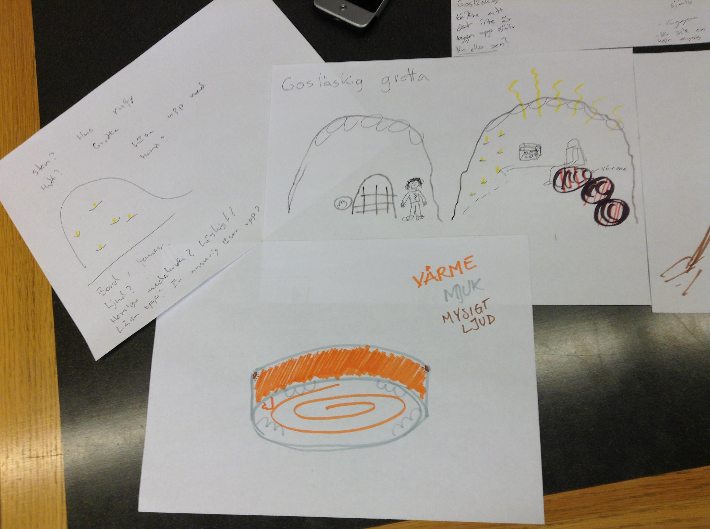

Gosläskig is a concept for a digital artifact at the playground. The aim of this design is to allow fantasy to flow, give a scary feeling and at the same time let kids relax. We wanted to create a place where the children don't have to play chaotic and wild games. It is inspired by a cave and has predefined sounds, but also leaves the children to create their own world inside. The resulting design was communicated through a comic scenario.
In the process we started out with some keywords like: "Cozy", "Massage", "Breathing room", and "Secret room" after doing ideation with Plex-cards. Later we used techniques as parallel design and six thinking hats.
From this project I learned about ideation and concept generation. Gosläskig was one of three concepts we worked on during the four weeks of this project. At the first design critique we presented 10 different ideas on exploring digital and physical playgrounds. I also learned about sketching my ideas.